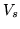
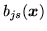

N-cluster the states listed in the
itemList and tie each cluster i as macro macroi
where i is 1,2,3,...,N.
The set of states in the itemList are divided into N
clusters using the following furthest neighbour hierarchical
cluster algorithm:
create 1 cluster for each state;
n = number of clusters;
while (n>N) {
find i and j for which g(i,j) is minimum;
merge clusters i and j;
}
Here g(i,j) is the inter-group distance between
clusters i and j defined as the maximum
distance between any state in cluster i and any state
in cluster j. The calculation of the inter-state
distance depends on the type of HMMs involved. Single
mixture Gaussians use
where  is the dimensionality of stream  . Fully tied
mixture systems (ie TIEDHS) use
. Fully tied
mixture systems (ie TIEDHS) use
and all others use
where
 is as defined in equation 7.1 for
the continuous case and equation 7.3 for the discrete case. The actual
tying of the states in each cluster is performed exactly as for
the Tie (TI) command below. The macro for the i'th
tied cluster is called macroi.
Back to HTK site
See front page for HTK Authors